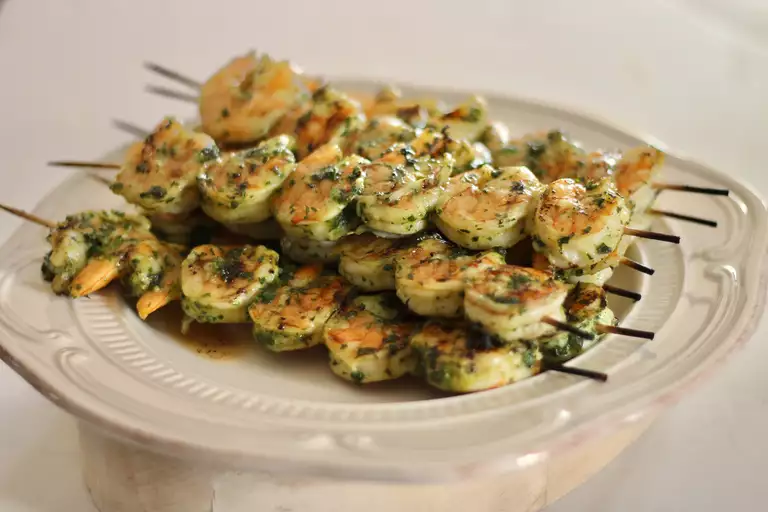

Chef John's Grilled Garlic and Herb Shrimp

Grilled Garlic and Herb Shrimp
This grilled garlic and herb shrimp recipe is very easy, IF you can just walk out into the backyard, and pick a handful of your own fresh, green sprigs. However, these are so amazingly delicious, if you don't have a garden, then do splurge and buy a bunch of all the herbs. And get the extra large shrimp so they can grill longer and get maximum caramelization.
Ingredients
- 1 ½ teaspoons kosher salt
- ½ teaspoon lemon zest
- 3 cloves garlic, thinly sliced
- 3 tablespoons chopped fresh basil leaves
- 3 tablespoons chopped fresh flat-leaf parsley
- 1 tablespoon chopped fresh oregano leaves
- 1 tablespoon chopped fresh lemon thyme leaves
- 4 tablespoons olive oil, divided, or as needed
- 2 pounds extra large shrimp (16-20), peeled and deveined, tail left on
- skewers
Sauce:
- 1 tablespoon olive oil
- ½ lemon, juiced
- ½ teaspoon red pepper flakes
- 1 pinch cayenne pepper
- salt and ground black pepper to taste
- 1 lemon, cut into wedges
Directions
- Place salt, lemon zest, and 3 cloves garlic in bowl of a mortar and pestle. Pound with the pestle until mixture begins to form a paste, about 2 minutes. Add chopped basil, parsley, oregano, and thyme and pound with pestle until mixture begin to come together, about 5 minutes.
- Drizzle about 1 tablespoon of the olive oil into herb mixture. Grind together until mixture begins to form a sauce for marinating, about 1 minute. Pour in the remaining 3 tablespoons olive oil. Stir mixture with a spoon until mixture is thoroughly combined, adding additional olive oil as needed. Mixture should be fairly thick but pourable.
- Place shrimp in a large bowl and mix in about 2/3 of the sauce, reserving 1/3 for serving. Stir until shrimp are evenly coated with the sauce, about 2 minutes. Transfer shrimp to a resealable plastic bag. Refrigerate 2 to 3 hours. Cover and refrigerate remaining sauce.
- Preheat an outdoor grill for high heat and lightly oil the grate.
- Thread shrimp onto skewers (pierce each twice, once through large part of shrimp, once through small part). Place skewers on hot grill. Cook on each side until shrimp are bright pink and opaque and exterior is beginning to caramelize, 2 to 3 minutes per side. Transfer skewers to serving platter.
- Pour remaining sauce into mixing bowl. Whisk in 1 tablespoon olive oil, lemon juice, red pepper flakes, cayenne pepper, salt and black pepper. Spoon sauce over shrimp. Serve with lemon wedges.
Home